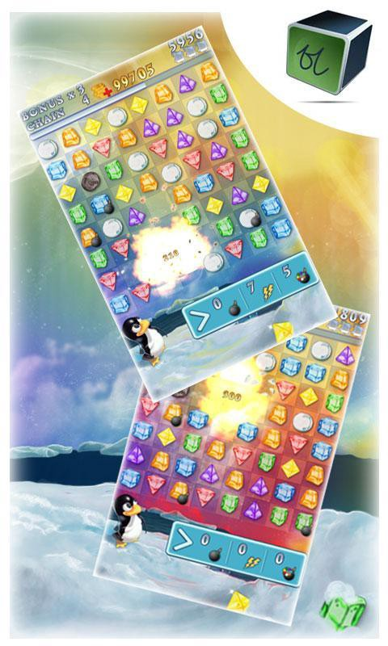

Introduction
I am an Android Developer from the beginning of my professional career. Straight from the University, I’ve jumped into Android development, and to this day continue my journey. During that time I’ve worked in different areas: enterprise, product business applications, SDK development. But all that started with mobile game development.
The first project I took part in was called “nICE”. It was a match-3-like game. It was at the time when there was Android Market and not Google Play Store, when we used Eclipse and not Android Studio and, of course, used Java. The game was already available in the Market, but we wanted to develop it more by adding some power-ups to make game experience richer (and gain more from in-app purchases) and introduce some additional game modes (like puzzles).
One could click on a penguin to get a hint!
As it was my first project, I have special feelings about it. Currently, it is not available in the Play Store, because without support over time app had more and more issues and some critical bugs, which not allow you to play. One of the most prominent bugs was that game progress not saved across app launches. Upset.
Even considering app is no longer in Play Store, it is installed on my phone and from time to time I can launch it to travel back to those times.
A few years ago I asked my friend whether there are sources of that game, as I would like to fix some issues. Maybe after that long time, I will be able to do something. He found what he could, but I was too busy to concentrate on that, and sources were left for another few years. But now sitting at home I had some time to spend on that and in 3 long evenings, I was able to build it and fix some issues. Here will be some story on the process and result. There will be neither sources nor new application published though. More on that at the end of the article.
Here we go.
Day 1
First of all, what I remembered was that game was done using libgdx. We had our wrapper framework over libgdx sources. And there was game itself and a bunch of various libraries.
In the sources which I received there was wrapper framework, game sources, some libraries, but libgdx sources (or at least version) were missing. We haven’t used any build system at that time, and if someone remembered, in Eclipse one could add libraries and frameworks to classpath via IDE UI. So, connecting everything was a bit tricky task.
First I tried to import project into Android Studio as Eclipse project. It almost worked, but from time to time there were some crashes while building. The latest told that some index files are broken and on Stackoverflow it was suggested that I should change Java compiler in settings from javac to eclipse. I did that with no luck and decided to just create Gradle project manually from sources.
Adding Gradle project was simple: just a few config files and voila. But during build, there were a lot of issues between game source code and wrapper framework. That meant that versions were not compatible (actually that times we had 2 different but similar wrappers over libgdx and I had wrong sources, but I figured that out much later).
After I found that I was like: sigh, it seems I can’t do anything about that.
Day 2
As usual, in programming some ideas came to your brain somewhere in the middle of another activity. I even don’t remember how I got to this, but I was like: I can decompile the APK file!
I’ve extracted APK installed on my phone (using some app from market — yes you can extract APK from installed app) and decompiled it. General technique: rename .apk to .zip, unzip and you find all the resources and most important — sources: classes.dex.
One can decompile dex file to jar and extract sources. There are tools for that. Unfortunately, not all code can be decompiled automatically, but we’ll go into that later. For decompiling I used dex2jar and then worked with jar file with jd-gui. I did all the process, extracted all the sources I could find (I was lucky as we didn’t use obfuscation), added to the project and found just that there are so many missing places and issues, that it is not possible to fix them being a human. Especially complex was code of the libgdx — low-level calculations where it is so easy to make a mistake.
So, I need sources of libgdx. They are on GitHub, I just need to download correct version. I’ve compared the latest time of release and took some version — 0.9.6. Downloaded sources, added them — but there were a lot of differences, which concluded to me that there is no way I’ll be able to fix them.
I gave up once again. Till tomorrow
Day 3
I don’t know how I decided to try again to look at the decompiled version of APK. I sit at the laptop, tried to find some game to play. Started Portal 2, passed a few levels, closed game and opened Android Studio. I don’t even know whether I had some other idea. I guess at that time I understood that there should be another version of wrapper framework and there are other decompilers.
Pretty fast I found in the decompiled sources version of the libgdx — it was 0.9.1. I’ve downloaded it and added it to the project.
Next, I tried jadx as java decompiler and the result was much better (maybe it is just a coincidence).
At that point, I had sources of libgdx, decompiled sources of wrapper framework and sources of game — almost everything I need. I fixed a few issues between libdgx and wrapper framework and project built successfully!
But in runtime it crashed. It was crashing for many different reasons. I didn’t pay much attention to that — cutting everything that seemed outdated, removing all the code that is not interesting. I removed:
-
Scoreloop — that is an engine for leaderboards and achievements. No longer exists. Died after Google Play Games dominated in Android ecosystem
-
Flurry analytics
-
ACRA — crash reporter which was helpful before Crashlytics
-
Ads — Google Ads were available that days for sure, but SDK anyway too outdated
-
IAB — in-apps are the same story
-
and so on
Project built, game started, crashed a few times for some reason. In general, it feels that it worked, but there were crashes in native libs (which I haven’t added). I tried to add libs from libgdx jni folders — but there were still crashes that some methods are missing. And then I’ve just taken these libs from where? From decompiled APK, of course. It was surprising to me that libs from the 0.9.1 release and in the APK were different. I didn’t want to analyze why. I’ve just added what I had.
There were still some issues which — with the help of Stackoverflow — I found were because of too high targetSdkVersion. So I should’ve put targetSdkVersion to 22 at max.
And. Game. Worked.
This was a really cool moment when I understood that finally I did what felt not possible last few days.
Fixes
I haven’t focused on fixes much. The main which bothered me was issue with progress not being saved. Turned out the issue was with encryption — for some reason (maybe something changed on the devices for that time?) decryption started failing with “bad padding” error. I actually didn’t care about that much, as encryption was needed to make it more difficult for people to get to the top rankings in the leaderboards (prevent cheating). So, I’ve just dropped encryption.
And of course, it worked.
What’s next?
Anyway, this new version with “fixes” is a dead project. There is no way to publish that app as of targetSdkVersion 22 (Google Play Store now has restrictions on that), there is no way to increase that version as it requires to increase version of libgdx, which requires major refactoring of the whole app.
I don’t think there is a need in spending time on that. As long as there is a way to side-load APK to the device and play — it is fine.
It is by far exceptional project to me, not only because it was first, but also because I tried to make game experience cool by adding bonuses and power-ups while trying to define (with help of other guys from the company) puzzles for a new mode.
And I’m happy that now we have at least some sources, which are possible to build and run.
Happy coding!